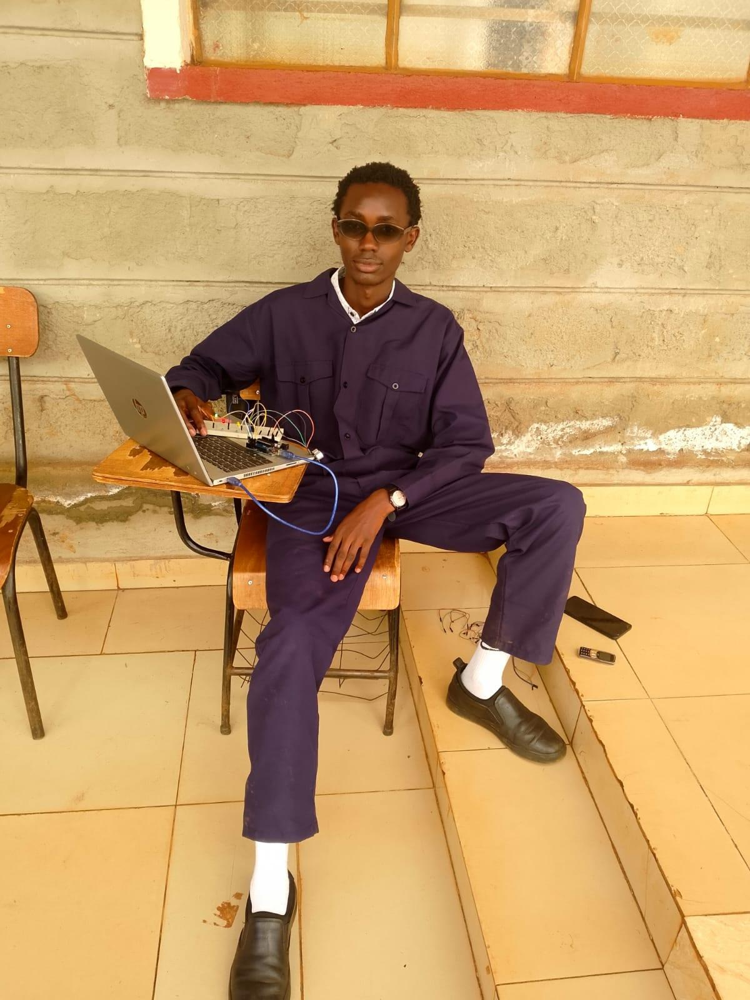

Engineering principles
Physics, measurements, forces, energy, and the behaviour of systems and components.
Curiosity into capability.
I'm Eng Sir Alex Irungu — a Medical Engineering student exploring the space where engineering, technology, and human wellbeing meet.

This is more than a portfolio. It is a living record of what I learn, what I build, the questions I ask, and the engineer I am working to become.
The person behind the ambition.
I believe engineering is a way of asking better questions — and turning thoughtful answers into practical solutions.
I'm studying a Bachelor of Technology in Medical Engineering at Kirinyaga University, Kenya. I'm passionate about engineering, technology, innovation, and the possibility of using technical knowledge to make a meaningful difference in people's lives.
My interests span electronics, programming, automation, computer-aided design, and emerging healthcare technologies. I enjoy exploring how things work, experimenting with ideas, and learning from the process — including the parts that don't work the first time.
Beyond technical knowledge, I'm working to strengthen my discipline, communication, teamwork, and ability to approach challenges with an open mind.
“Learn with curiosity. Build with purpose. Improve through experience.”
Every subject is another tool.
Every project is another lesson.
My studies are helping me connect engineering principles with the technology used in healthcare. I see university as a place to build a strong theoretical foundation while learning to apply ideas through practical work, independent study, and experimentation.
Follow my learning journal ↗Physics, measurements, forces, energy, and the behaviour of systems and components.
Circuits, sensors, components, signal concepts, and hardware control.
Technical drawings, 3D models, tools, materials, precision, and safety.
Logical problem-solving, microcontrollers, sensor inputs, and controlled outputs.
Exploring medical equipment, instrumentation, monitoring, and maintenance principles.
I'm still learning. I aim to represent my experience honestly, document what I test, and distinguish an early concept from a validated solution.
Click a project to explore its purpose, process, and next steps.
Project descriptions distinguish learning exercises and concepts from tested prototypes. Add your own photos, results, and project status as your work progresses.
Add a project card as your portfolio grows. Your entries are saved in this browser.
Practised, developing, and exploring —
each stage has value.
AutoCAD 2D drafting, 3D modelling practice, geometry, and design presentation.
Arduino, LEDs, sensors, buzzers, input/output logic, and circuit troubleshooting.
Programming fundamentals, structured logic, debugging, and microcontroller code.
Breaking problems down, testing assumptions, troubleshooting, and documenting lessons.
Exploring instrumentation, healthcare equipment, monitoring systems, and innovation.
Learning to present ideas clearly, collaborate, listen to feedback, and work responsibly.
Skill labels describe my current learning focus, not formal certification or professional competence.
Small lessons become meaningful progress when you keep track of them.
Use this space to record a new concept, a bug you fixed, a milestone, or an idea you want to explore next.
Entries are stored locally in this browser.Add your first journal entry to begin documenting your growth.
I'm interested in the intersection of healthcare, engineering, and emerging technology. These are directions I want to investigate — not claims of finished medical solutions.
Learn how monitoring, maintenance, and sensor systems can support dependable healthcare technology.
↗Explore responsible applications of programming and AI in technical data, automation, and healthcare research.
↗Investigate imaging principles, optical systems, and how careful evaluation shapes biomedical concepts.
↗Become a capable, responsible Medical Engineering professional — grounded in strong fundamentals, practical experience, integrity, and a commitment to meaningful innovation.
I'm open to learning, exchanging ideas, mentorship, student projects, and appropriate opportunities related to engineering and technology.
Send me a message. I'd be glad to connect.
Email Alex ↗Message on WhatsApp ↗↓ Download my CV HTML CV · printable to PDF